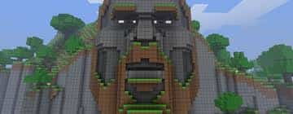

|

Голова нотча на Історія MOJANG«Minecraft: Історія Mojang» (англ. Minecraft: The Story of Mojang) — документальний фільм 2012 року про історію компанії Mojang та її творіння — відеогри Minecraft, що вийшла у 2011 році. У фільмі представлені інтерв'ю зі співробітниками компанії, такими як Маркус Перссон та Єнс Бергенстен; думки людей, що займаються індустрією відеоігор і гравців, які зазнали великого впливу від гри.[1] Кінострічка була знята 2 Player Productions, а виробництво фінансувалася зборами коштів на Kickstarter. Створенням фільму займалися два роки у місцях по всій Північній Америці та Європі.[2][3][4] Прем'єра фільму відбулася 22 грудня 2012 року на Xbox Live і була доступною для завантаження та трансляції протягом дня.[3] 2 Player Productions пізніше завантажили фільм на торрент-трекер «The Pirate Bay», але закликали людей все-таки розглянути питання покупки фільму.[6] ОписУ фільмі описується розробка гри компанією Mojang.[1] Також тут фігурують думки інших людей про вплив, популярність та спадщину гри.[1] Інтерв'ю з Маркусом Перссоном та іншими співробітниками студії дають представлення про те, що творилось у Mojang під час роботи над Minecraft.[1] СаундтрекСаундтрек до «Minecraft: Історії Mojang» був написаний Деніелєм Розенфельдом, більш відомим як C418, який також є творцем музичного супроводу гри. Музика включає альбом One від Деніеля, а на випущеному компакт-диску є ремікси від Денімела Кеннона, Бада Мелвіна і minusbaby. Також він включав вокал від Лори Шиґігара.[2] |